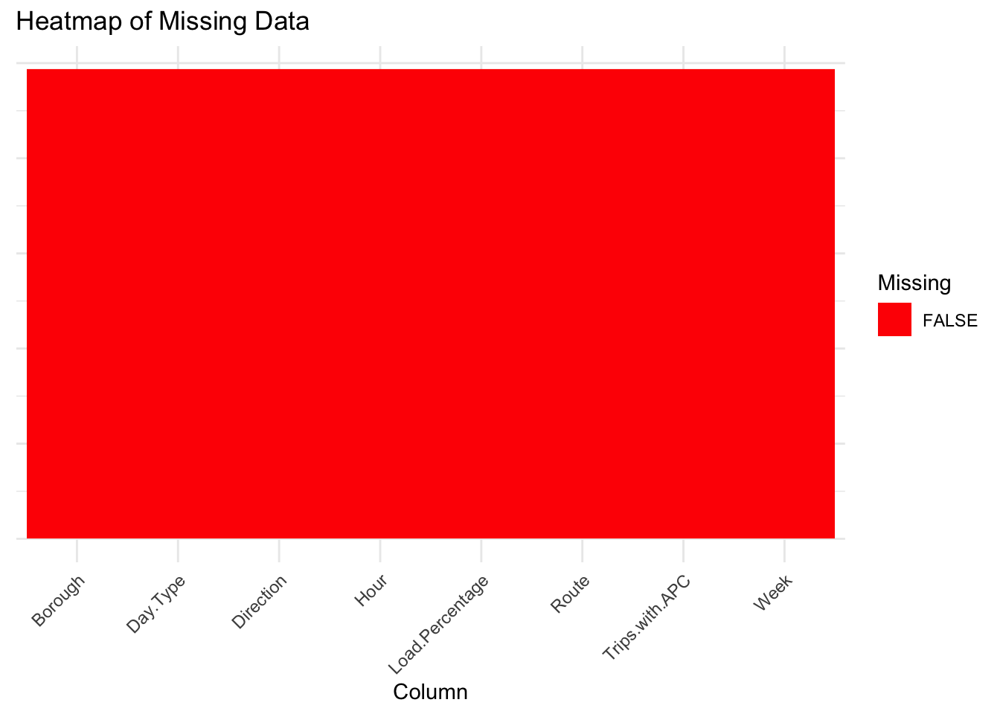
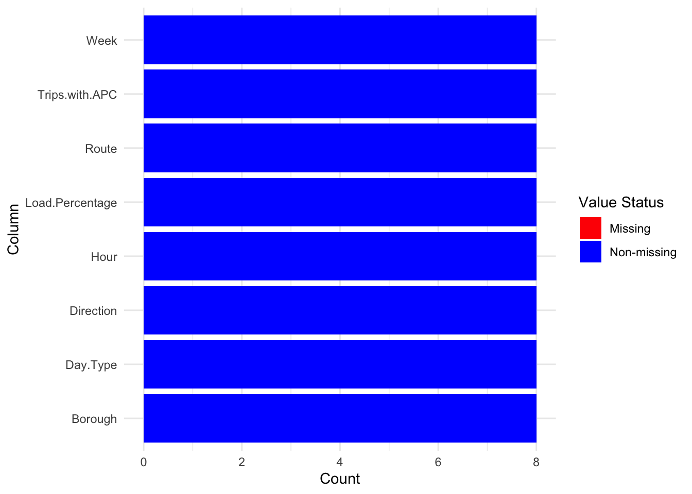

2 Data
2.1 Technical Description
For the proposed project, we will be utilizing data from data.ny.gov, focusing on the Metropolitan Transportation Authority (MTA) NYC Transport’s historical express bus service data. This data offers insights into the load percentages of bus routes across different directions, boroughs, and times within New York state.
The data for our research is primarily collected by the Metropolitan Transportation Authority (MTA). It is gathered systematically from the operational systems of the MTA, providing a comprehensive overview of express bus load dynamics. The data set spans from January 2023 to the latest update on October 16, 2023. It is updated monthly and encompasses various dimensions, including load percentages, bus routes, boroughs, and time of the day.
The data set is reliable due to its comprehensive nature (eight columns) and a large sample size (49,300 data points), which facilitates robust inferences on load trends. We have imported the data as a CSV file, given the compatibility and ease of use of CSV datasets in the R programming environment.
As of now, no significant issues have been identified with the data set. The primary data source can be accessed at MTA NYC Transport’s Historical Express Bus Service Data on data.ny.gov. In case of any updates or revisions, we will refer to this specific data set page on the website for the most current information.
2.2 Research Plan
How we explain the questions we put forward in introduction?
2.2.1 Passenger Load Analysis:
- Data Utilization: The data set provides load percentages for each express bus route at their maximum load points. This can be used to identify the most crowded bus stops, routes, and boroughs.
- Methodology: By examining the variation in load percentages over time, you can analyze trends in passenger demand. Comparisons can be made across different routes and stops to determine which are consistently overburdened.
- Outcome: This analysis will reveal the areas where the bus network is potentially strained, indicating where improvements or adjustments are needed.
2.2.2 Time-Based Trends:
- Data Utilization: Load percentages are broken down by hour and day type (weekday and weekends). This allows for a granular analysis of usage patterns.
- Methodology: By plotting these data points, you can identify peak and off-peak usage times. This information can be used to examine how bus utilization fluctuates throughout the day and on different types of days.
- Outcome: The findings will inform recommendations for optimizing bus schedules and frequencies, ensuring that service availability aligns with passenger demand.
2.2.3 Route Optimization:
- Data Utilization: Aggregated weekly data on load percentages by route and stop will highlight which routes are consistently busy.
- Methodology: Analyzing this data can help determine where resources might be insufficient. You can identify specific times and locations that require additional buses or larger capacity vehicles.
- Outcome: The aim is to propose specific route adjustments and enhancements that can improve service quality and reduce overcrowding.
2.2.4 Policy and Planning Implications:
- Data Utilization: The comprehensive nature of the data set provides a detailed picture of how the express bus network is currently serving the city.
- Methodology: By synthesizing the insights from load analysis, time-based trends, and route optimization, you can make informed recommendations for long-term planning and policy decisions.
- Outcome: The analysis will offer valuable input for city planners and policymakers, guiding them in making decisions about public transportation infrastructure, service improvements, and resource allocation.
In summary, the data set’s detailed breakdown of load percentages by route, stop, hour, and day type is instrumental in understanding the dynamics of express bus service utilization in New York City. By meticulously analyzing this data, you can answer critical questions about passenger load, time-based usage trends, route optimization needs, and broader policy implications. This approach will not only address the specific research questions but also contribute to the broader goal of enhancing urban mobility in New York City.
2.3 Missing value analysis

2.3.1 Comment:
The 1st figure, titled “Heat map of Missing Data”, shows a heat map where the entire area is filled with a single color, indicating the absence of missing values across all columns of the data set. Each column is represented on the x-axis, and the uniform color suggests that for every column in the data set, there are no missing (NA) values.
The 2nd figure, titled “Missing value analysis figure 2”, displays a stacked bar chart with each bar representing a column from the data set. The bars are filled with a single color, indicating non-missing values. The absence of a second color in each bar which would have represented missing values implies that there are no missing values in any of the columns of the data set. The count on the y-axis likely represents the total number of non-missing observations for each column.
Both figures effectively communicate that the data set is complete with no missing observations for any of the variables presented. This is beneficial for data analysis as it suggests that there may not be a need for imputation strategies, and statistical analyses can proceed without the complication of handling missing data.